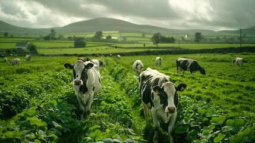
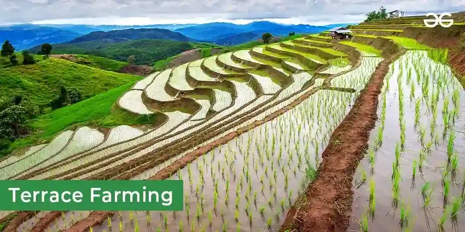
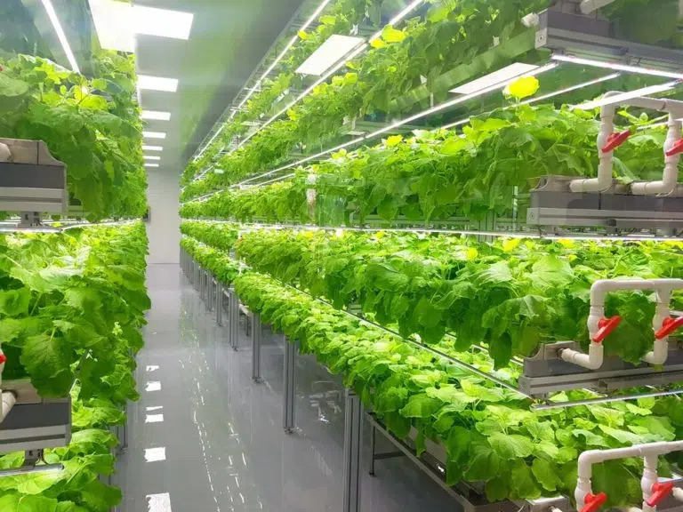
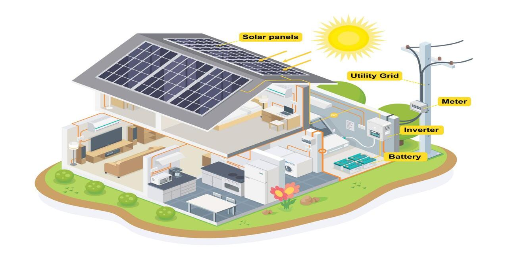
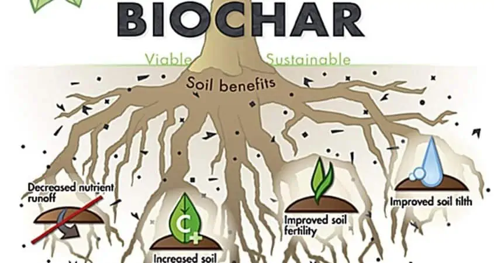
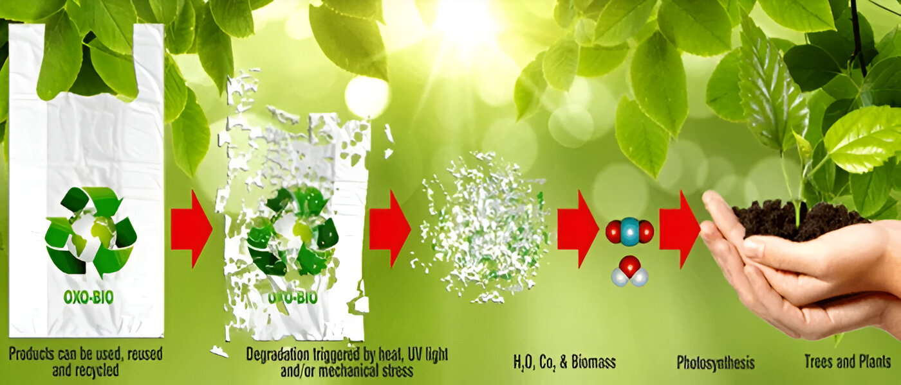

Farming Techniques
1. Organic Farming Techniques
2. Traditional Farming Techniques
-
Mixed Farming: Combining crops and livestock for resource efficiency.

-
Terrace Farming: Preventing soil erosion using stepped levels on hillsides.

-
Manual Labor: Planting and harvesting using human effort.

3. Modern Farming Techniques
-
Hydroponics: Growing plants without soil using nutrient-rich water.

-
Precision Farming: Using technology like GPS to optimize processes.

-
Vertical Farming: Cultivating crops in stacked layers within controlled environments.

-
Drone Usage: Monitoring and managing crops using drones.

4. Sustainable Techniques
-
Solar Power Integration: Using solar panels to generate clean energy for farming operations.

-
Biochar Application: Enhancing soil quality and sequestering carbon by adding biochar.

-
Biodegradable Plastics: Developing materials that naturally break down into eco-friendly components, reducing waste and pollution.

-
Automated Irrigation Systems: Using automated systems to optimize water usage and reduce wastage.